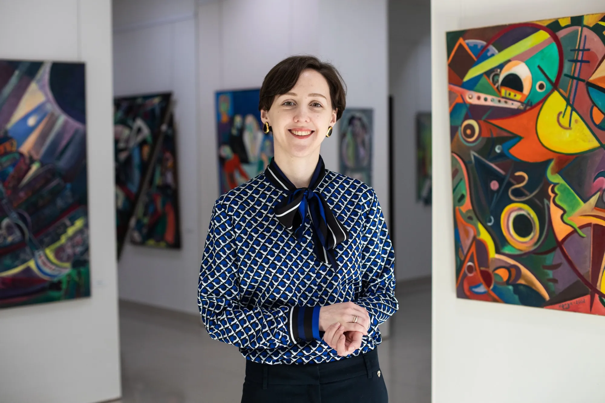
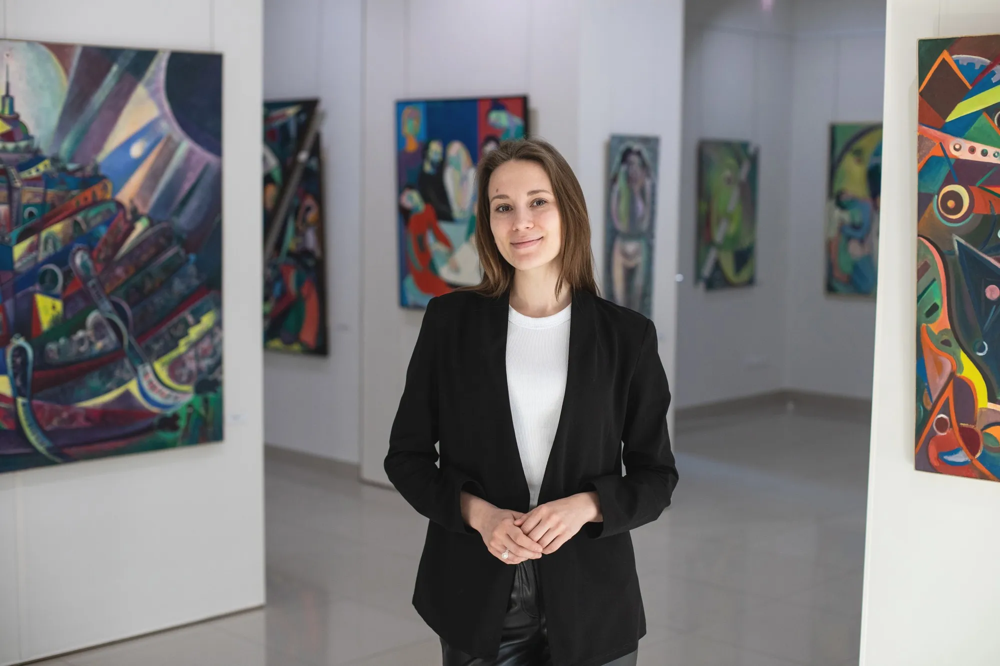
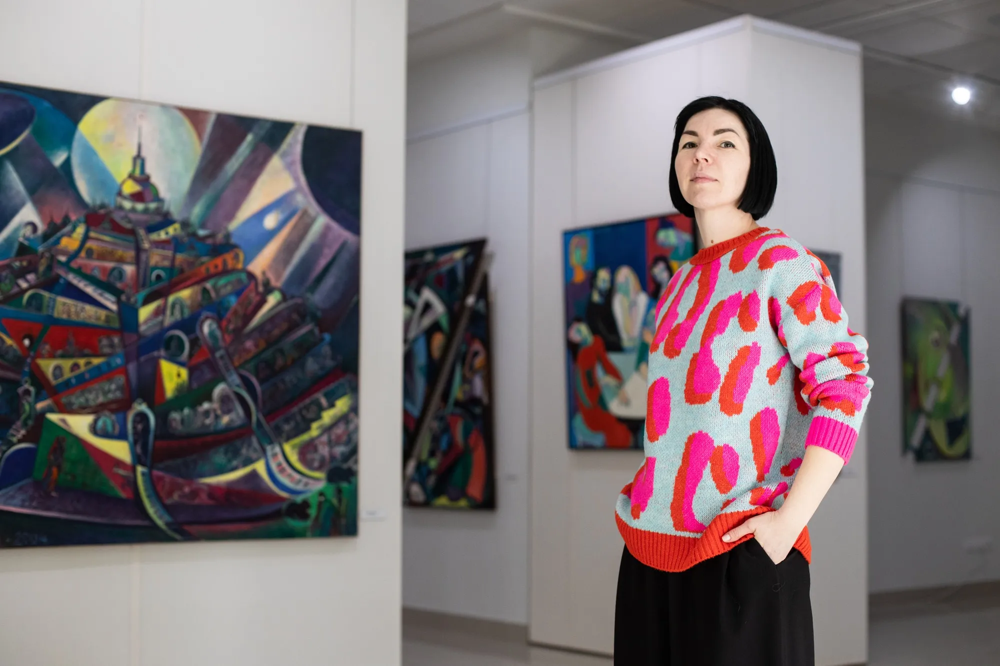
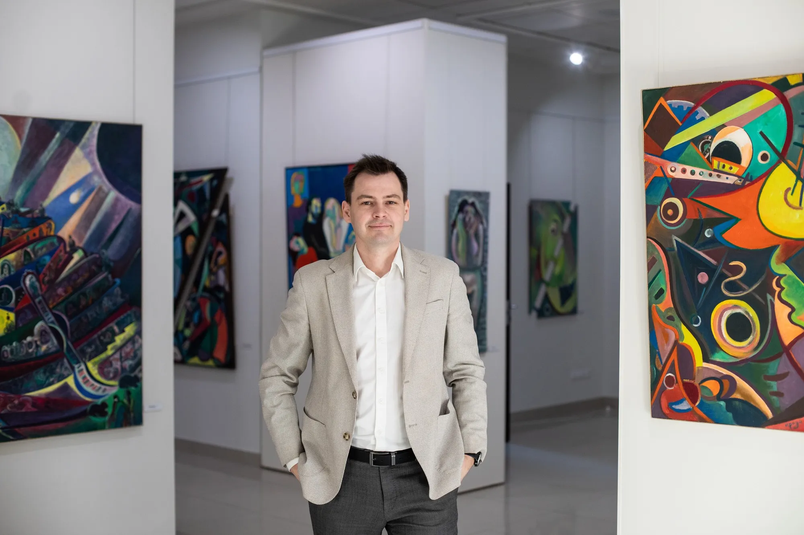
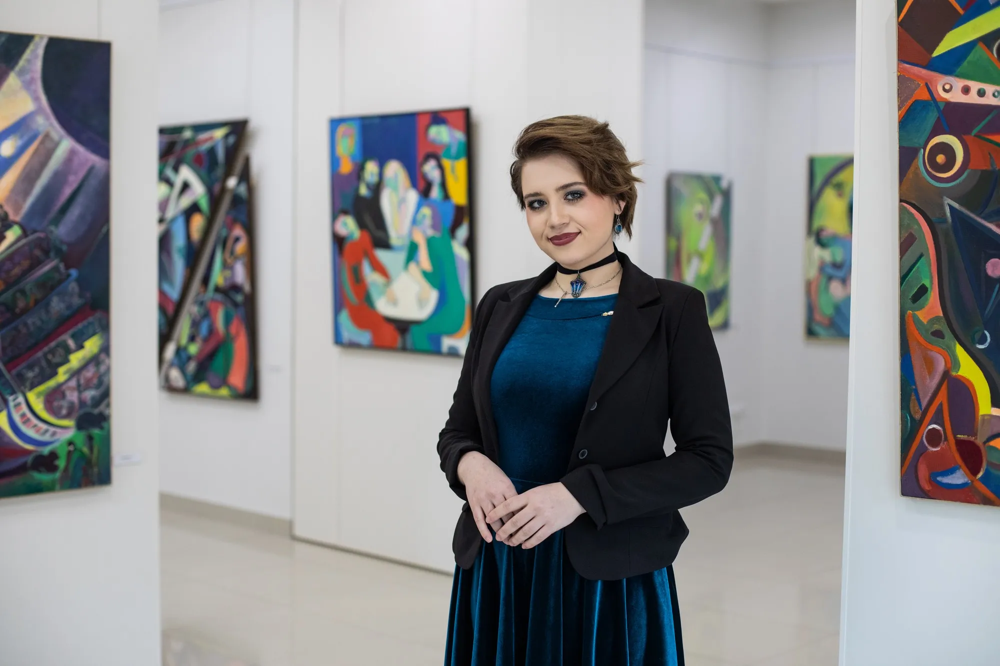

Мартовцы

Дарья
Хрипкоэксперт по современному искусству
Ещё в юности увлеклась каллиграфией, была соорганизатором первой каллиграфической выставки в Оренбурге и написала по любимым шрифтам магистерскую диссертацию.

Евгения
Чекрыгинанаучный сотрудник, художница
Генератор творчества: ролики в наших соцсетях — её рук дело. Архитектор-искусствовед, научный сотрудник Галереи Юрия Рысухина и М’АРТ резиденции. Пишет картины и учит живописи гостей.

Елена
Кузнецовасвязи со СМИ и соцсети
Рупор культуры: когда вы читаете наши посты, почти всегда слышите её голос. Верит, что искусство должно быть понятным и близким самым разным людям.

Сергей
Медведевруководитель пространства
Собрал команду Галереи и М’АРТа. Для него культура — дело семейное: прадед Сергея был первым директором Оренбургского музея изобразительных искусств, династию продолжили бабушка и мама.

Отрада
Колбаневакоммуникация с художниками
Скульптор душ и комьюнити музея. Создаёт удивительные куклы в сложной технике с подвижным каркасом.
Илья
Антипиндизайнер, автор фирменного стиля
Эксперт по спекулятивной эстетике и дипломированный дизайнер одежды. Его главная заслуга — фирменный стиль М’АРТ.